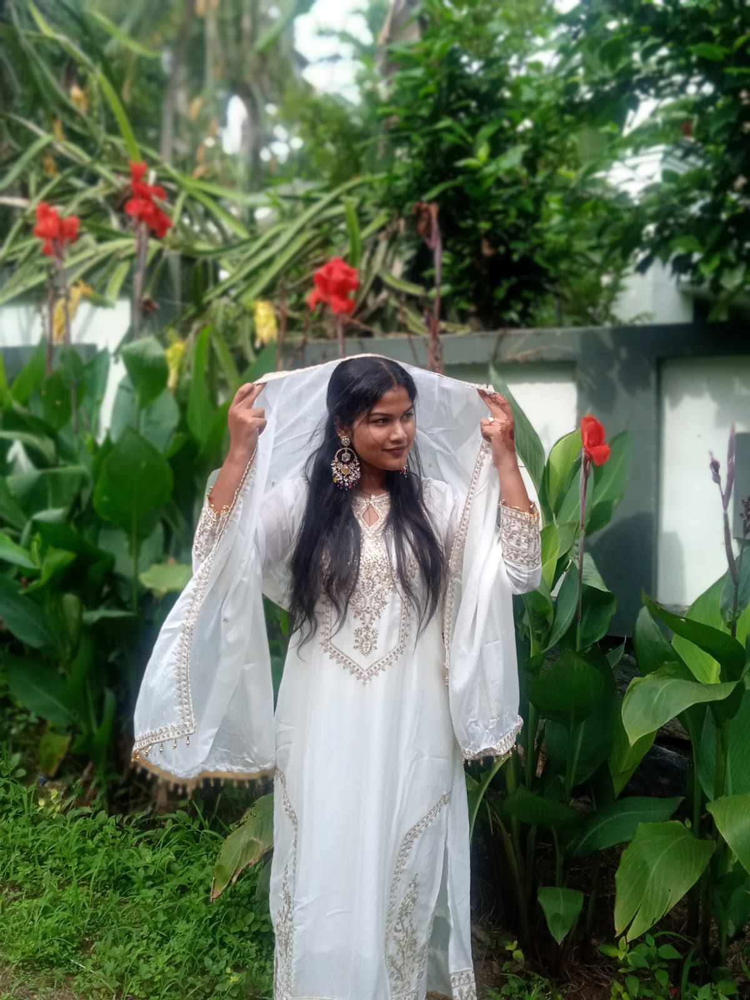

❣️Junju❣️
Aa koottathil eetavum virviruppu ollath ivalkku aanu.Ath pole snehavum. ENikk "Thanku" enna perum groupinu "Thankante thamara" ennu ittathum ival aanu
Ivar aayitt campine kaatilum clode aayath camp kazhinju aanu
← Back to Home